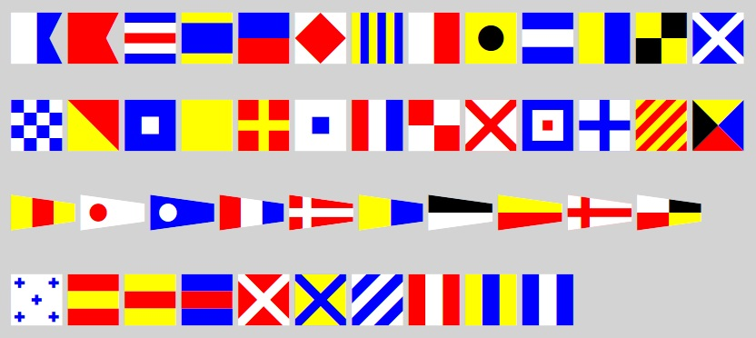

BabelStone Maritime is a font that provides 78 colourized glyphs for International Maritime Signal flags, Nato signal flags, other maritime signal flags, and miscellaneous maritime flags. The glyphs are mapped to Basic Latin letters, numbers, and punctuation marks.
This font uses the COLR/CPAL format for layered colour fonts, which is supported by all major browsers (including IE11, Edge, Firefox, and Chrome) running on Windows 10. The coloured flags also display correctly in Microsoft Word 2016, but most desktop applications (such as Notepad) do not currently support colour fonts. In applications that do not support colour fonts, the font provides black and white fallback glyphs showing an ASCII character within a flag or pennant of the same shape and size as the corresponding colour glyph.
As many of the flags have white areas, and the font glyphs do not have a border, it is advised to display the font characters on a neutral non-white background.
BabelStone Maritime (48 points)

The tables below render each flag character in the BabelStone Maritime font, either using the font installed on your local machine or using a WOFF font if the font is not installed on your local machine.
The 26 flag letters map to the corresponding lowercase Latin letters.
| Character | Flag | Description |
|---|---|---|
| a | a | A Alfa |
| b | b | B Bravo |
| c | c | C Charlie |
| d | d | D Delta |
| e | e | E Echo |
| f | f | F Foxtrot |
| g | g | G Golf |
| h | h | H Hotel |
| i | i | I India |
| j | j | J Juliet |
| k | k | K Kilo |
| l | l | L Lima |
| m | m | M Mike |
| n | n | N November |
| o | o | O Oscar |
| p | p | P Papa |
| q | q | Q Quebec |
| r | r | R Romeo |
| s | s | S Sierra |
| t | t | T Tango |
| u | u | U Uniform |
| v | v | V Victor |
| w | w | W Whiskey |
| x | x | X Xray |
| y | y | Y Yankee |
| z | z | Z Zulu |
These are the pennants for numbers defined by the International Code of Signals. They map to the digits "0" through "9".
| Character | Flag | Description |
|---|---|---|
| 0 | 0 | 0 Zero |
| 1 | 1 | 1 One |
| 2 | 2 | 2 Two |
| 3 | 3 | 3 Three |
| 4 | 4 | 4 Four |
| 5 | 5 | 5 Five |
| 6 | 6 | 6 Six |
| 7 | 7 | 7 Seven |
| 8 | 8 | 8 Eight |
| 9 | 9 | 9 Nine |
These are the flags for numbers used by the NATO. They map to "@" (for zero)and the uppercase letters "A" through "I" (for one through nine).
| Character | Flag | Description |
|---|---|---|
| @ | @ | 0 Zero |
| A | A | 1 One |
| B | B | 2 Two |
| C | C | 3 Three |
| D | D | 4 Four |
| E | E | 5 Five |
| F | F | 6 Six |
| G | G | 7 Seven |
| H | H | 8 Eight |
| I | I | 9 Nine |
These are substitute or replacement flags used to indicate a repeat of the first, second, third or fourth flag in the hoist. The first three substitute flags are used by the International Code of Signals and NATO, but the fourth substitute flag is only used by NATO. These map to symbols for the shift state of the digits "1" through "4" on the US keyboard.
| Character | Flag | Description |
|---|---|---|
| ! | ! | 1st Substitute |
| " | " | 2nd Substitute |
| # | # | 3rd Substitute |
| $ | $ | 4th Substitute |
These map to uppercase Latin letters "J" through "Z", and "%" and "&".
| Character | Flag | Description |
|---|---|---|
| J | J | Code/Answer Pennant (ANS) |
| K | K | Preparatory (PREP) |
| L | L | Question (INT) |
| M | M | Negation (NEGAT) |
| N | N | Designation (DESIG) |
| O | O | Course Pennant (CORPEN) |
| P | P | Turn (TURN) |
| Q | Q | Screen (SCREEN) |
| R | R | Speed (SPEED) |
| S | S | Station (STATION) |
| T | T | Port (PORT) |
| U | U | Starboard (STBD) |
| V | V | Formation (FORM) |
| W | W | Division (DIV) |
| X | X | Squadron (SQUAD) |
| Y | Y | Prompt |
| Z | Z | Emergency (EMERG) |
| % | % | Subdivision (SUBDIV) |
| & | & | Group (FLOT) |
These are other miscellaneous flags not defined by the International Code of Signals or NATO. They map to various symbols and punctuation marks.
| Character | Flag | Description |
|---|---|---|
| * | * | Diver Down |
| + | + | Red Cross |
| - | - | Red Crescent |
| ~ | ~ | Jolly Roger (Skull and Crossbones) |
| _ | _ | White Flag |
| ^ | ^ | Black Flag |
| [ | [ | Å Åke (Swedish) |
| \ | \ | Ä Ärlig (Swedish) |
| ] | ] | Ö Östen (Swedish) |
| Version | Date | Notes |
|---|---|---|
| 0.000 | 2018-02-17 | Initial release |
| 0.001 | 2018-02-23 | Fix for black/white tilde glyph |
BabelStone Maritime is licensed under the SIL Open Font License 1.1, which means you are free to use it for personal or commercial purposes, and to redistribute it by itself or as part of a free or commercial software package, just as long as you do not sell the font on its own. The license also allows you to modify the font in any way you like, as long as the modified font does not use "BabelStone" in its name. Please read the license for details.
You may download the WOFF version of the font, and host it on your server if you wish, but you cannot use the WOFF file at babelstone.co.uk on other websites.